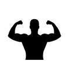

In bodybuilding history for the Joe Weider Olympia, there was no returning Mr.Olympia for the Open Bodybuilding class. As well as for the 212 class, and in Men's Physique, Classic and Women's Figure and bikini classes, new champions were crowned.  In Women's Bikini class the winner was, Elisa Pecini, and Women's Figure, Cydney Gillon. For Men's Classic physique, Chris Bumstead. For the Men's Physique class, it was Raymont Edmunds. Finally, for the grand champion of Mr.Olympia, Brandon Curry. All were ready for their war on stage to come out on top. Though some people were upset, the journey was worth it all! All validated sources can be found on the Joe Weider Mr.Olympia website and NPC News Online, as well as other well known published magazine site such as RX Muscle, Ironman Magazine, Muscle and Fitness, and much more! These champions will now go down in history and be known for their hardwork and dedication to their calling and purpose in the sport of bodybuilding.